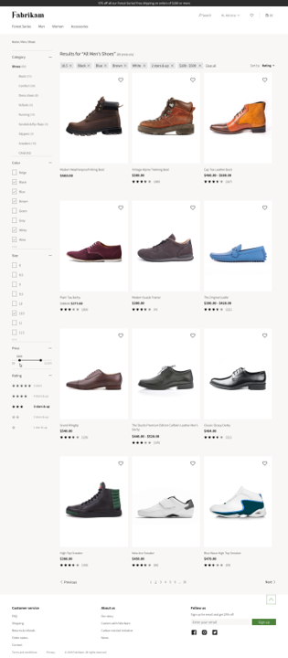

Übersicht über die Standard-Kategorie-Landingpage und die Suchergebnisseite
Important
Dynamics 365 Retail ist jetzt Dynamics 365 Commerce und bietet umfassende Handelsfunktionen für alle Kanäle – von E-Commerce über Shops bis hin zu Callcentern. Weitere Informationen zu diesen Änderungen finden Sie unter Microsoft Dynamics 365 Commerce.
Dieses Thema gibt eine Übersicht über die Standard-Kategorie-Startseite und Suchergebnisseite in Microsoft Dynamics 365 Commerce E-Commerce.
Standard-Kategorie Startseite
Die Standardkategoriestartseite ist die Seite, zu der die Websitebenutzer in der Regel gelangen, wenn sie eine Kategorie in der Navigationshierarchie auswählen. Mit der Kategorieseite können Sie durchsuchen, und Sie können die kategorisierten Produkte auch sortieren und verfeinern.
Oben auf der Seite befindet sich eine Kopfzeile mit allen Produktkategorien und anderen Seiten, die Verkaufsmanager kategorisiert haben. Konfiguration wird als Teil der Konfiguration der Kanalnavigationshierarchie ausgeführt. Unten auf der Startseite befindet sich eine Fußzeile mit Direktlinks zu verschiedenen Themen, die Kunden interessieren könnten.
Die folgenden Komponenten sind für eine Kategorie zentral:
Produktplatzierungskacheln zeign die Produkte, die der Verkaufmanager in einer Kategorie als Teil der Variante der Navigationshierarchie definiert.
Verfeinerungs- und Auswahlzusammenfassung sind Filter, die Zählungen beeinhalten und zur Feinsuche von Artikeln verwendet werden. Der Verkaufmanager konfiguriert sie als Teil der Konfiguration der Metadaten, die den Kanalkategorien und Produktattributen zugeordnet werden.
Sortieroptionen werden von den Websitebesuchern verwendet, um die Produkte zu sortieren. Standardmäßig sind die folgenden Sortieroptionen verfügbar:
- Preis - niedrig bis hoch.
- Preis - hoch bis niedrig
- Produktname - [A-Z]
- Produktname - [Z-A]
- Bewertung - tief bis hoch
- Bewertung - hoch bis tief
Die Paginierung ermöglicht es Websitebesuchern, von einer Seite mit kategorisierten Produktergebnissen zu einer anderen Seite zu wechseln.
Gesamtzahl gibt die Gesamtzahl von Produkten an, die in einer Kategorie definiert werden.
Füllen einer Kategorie-Landingpage
Wenn Sie für eine Kategorieangebotsseite eine angepasste Erfahrung für eine bestimmte Kategorie möchten, können Sie die Kategoriestartseite für diese Kategorie „anreichern“. So können Sie ein Marketings-Video und Geschichten zu den Kategorien hinzufügen, um die Aufmerksamkeit des Käufers abzurufen. Weitere Informationen finden Sie unter Reichern Sie eine Kategorieangebotsseite an.

Ergebnisseite automatisch vorschlagen und suchen
Websitebenutzer können eine Website durchsuchen, entweder, indem sie zu einer Kategorie in der Navigationshierarchie gehen oder indem Sie einen Suchbegriff in der Auswahlliste eingeben.
Sobald der Benutzer mit der Eingabe im Suchfeld beginnt, schlägt die automatische Funktionalität Suchbegriffe vor.
Nachfolgend sind einige Vorschlagstypen, die angezeigt werden können:
- Schlüsselwörter werden verwendet, um Artikel zu allen Produkten zu suchen, die in dem Kanal sortiert werden.
- Produkte beinhalten direkte Links zu Produktdetailseiten bereit.
- Bewertete Kategoriesuchvorschläge führt verschiedene Kategorien auf und lässt Benutzer nach Schlüsselwörtern in einer bestimmten Kategorie suchen.

Wenn Benutzer eines der Schlüsselwörter oder eine bewertete der Kategorie aus den Suchvorschlägen auswählt oder wenn es keine Vorschläge für den Suchbegriff gibt, den sie eingeben, werden sie zu einer Suchergebnisseite umgeleitet. Die Benutzer kann dann die Suchergebnisse durchsuchen, sortieren und verfeinern, um den gewünschten Artikel zu finden.

Die folgenden Komponenten sind für eine Suchergebnisseite zentral:
Produktplatzierungskacheln zeigen die Produkte für die Suche des Benutzers. Standardmäßig werden diese Kacheln durch die Cloud-betriebene Suchenbedeutungspunktzahl für die Benutzersuche sortiert.
Verfeinerungs- und Auswahlzusammenfassung sind Filter, die Zählungen beeinhalten und zur Feinsuche von Artikeln verwendet werden. Der Verkaufmanager konfiguriert sie als Teil der Konfiguration der Metadaten, die dann den Kanalkategorien und Produktattributen zugeordnet werden.
Sortieroptionen werden von den Websitebesuchern verwendet, um die Produkte zu sortieren. Standardmäßig sind die folgenden Sortieroptionen verfügbar:
- Preis - niedrig bis hoch.
- Preis - hoch bis niedrig
- Produktname - [A-Z]
- Produktname - [Z-A]
- Bewertung - tief bis hoch
- Bewertung - hoch bis tief
- Standard
Die Paginierung ermöglicht es Websitebesuchern, von einer Seite mit kategorisierten Produktergebnissen zu einer anderen Seite zu wechseln.
Gesamtzahl gibt die Gesamtzahl von Produkten an, die in einer Kategorie definiert werden und den Suchkriterien entsprechen.
Note
Diese Cloud-betriebenen Suchfunktionen sind ab Version 10.0.8 verfügbar. Stellen Sie sicher, dass unter Handelsparameter > Konfigurationsparameter ein Eintrag für „ProductSearch.UseAzureSearch set to 'true'“ vorhanden ist.

Zusätzliche Ressourcen
Übersicht über die Cloud-basierte Suche
Übersicht der Produktdetailseiten